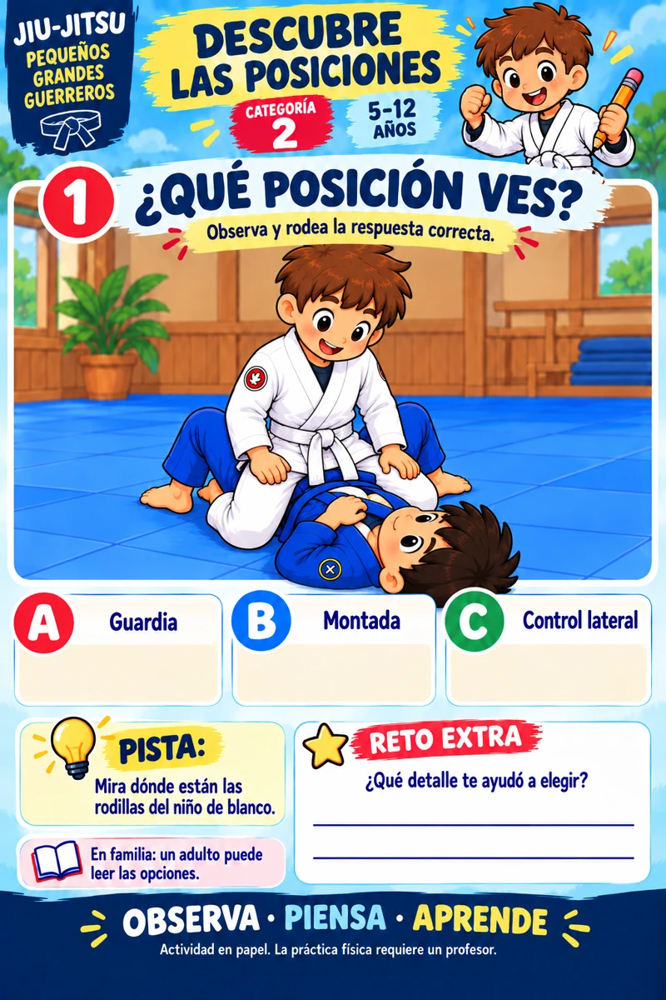
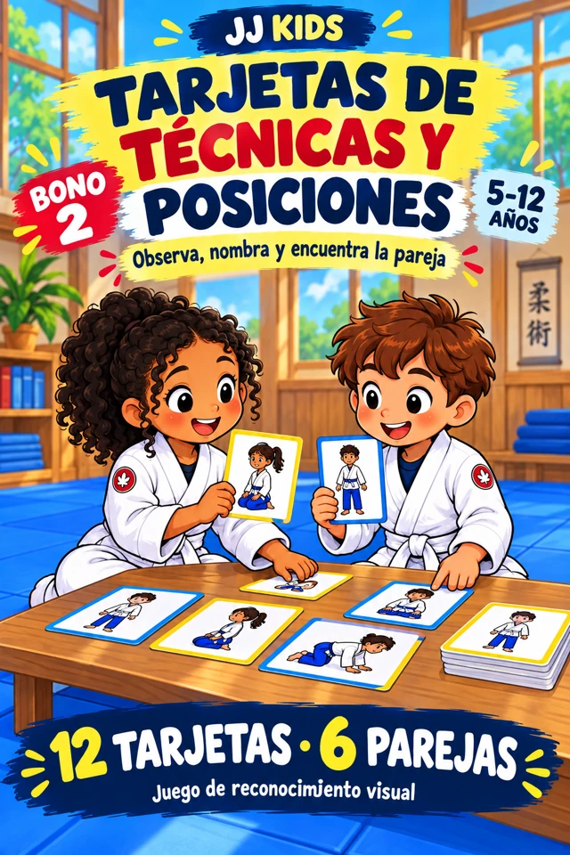
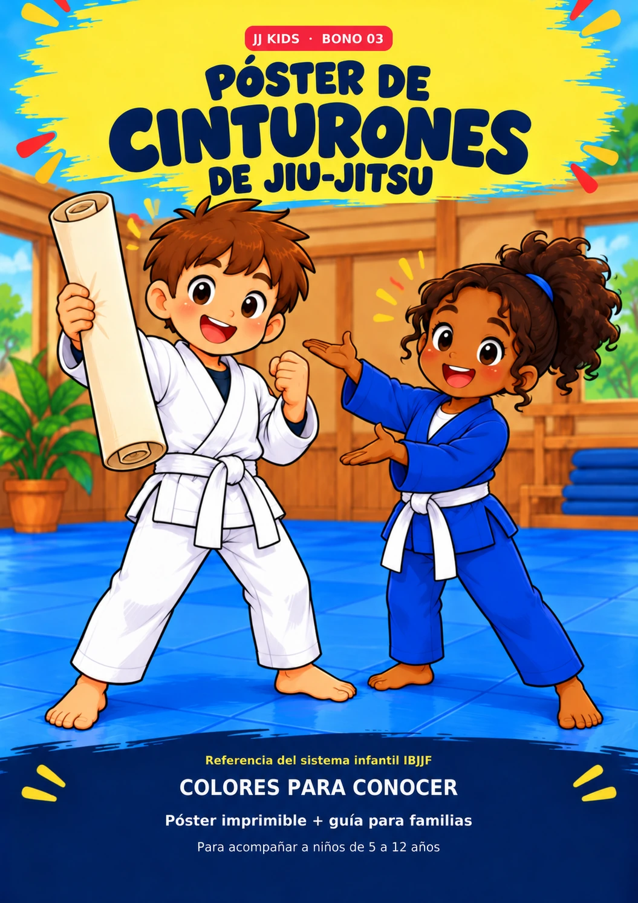
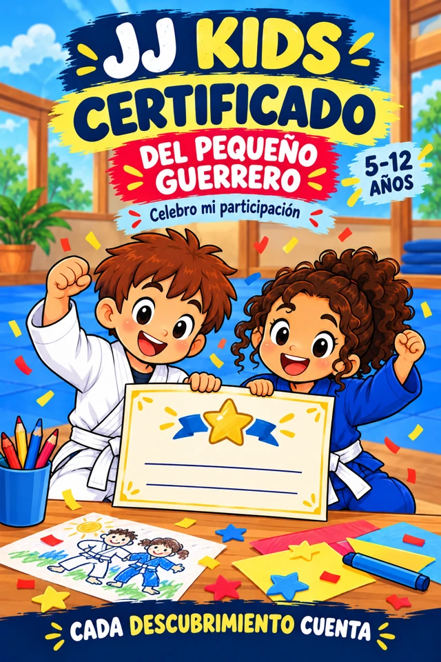
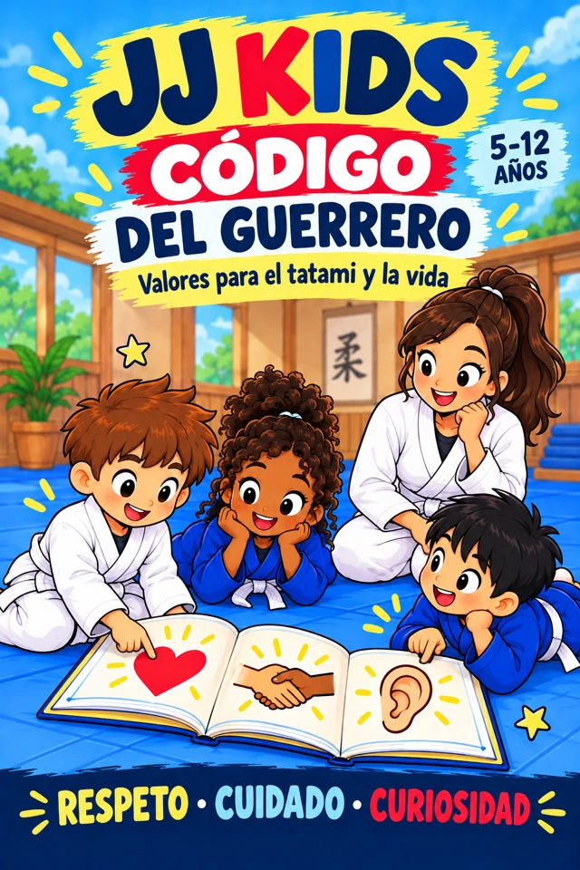

¿Cómo se llamaba esa posición?
En una clase hay mucho por descubrir. Las actividades ayudan a volver sobre los nombres y reconocer lo que ve en el tatami.
Convierte el aprendizaje de Jiu-Jitsu en una experiencia divertida con actividades sobre movimientos, posiciones, gi, cinturones, grados, reglas, disciplina y todo lo que un niño necesita saber sobre el mundo del Jiu-Jitsu.

Lo que descubre en el tatami también puede convertirse en un momento de juego en casa.
En una clase hay mucho por descubrir. Las actividades ayudan a volver sobre los nombres y reconocer lo que ve en el tatami.
Cada paso trae palabras e ideas nuevas. Los juegos y las imágenes permiten explorarlas con calma y a su ritmo.
El respeto, la disciplina y el vocabulario también forman parte del Jiu-Jitsu. Puedes conversar sobre ellos en casa.
Colorear, buscar diferencias y resolver pequeños retos convierte el repaso en un momento compartido.
Diez categorías para explorar el Jiu-Jitsu con curiosidad, imaginación y muchas ganas de aprender.
Observa las ilustraciones, sigue las pistas y relaciona cada escena con su nombre.
Reconoce posiciones del Jiu-Jitsu con juegos visuales y ejercicios de asociación.
Explora las prendas y elementos que acompañan cada entrenamiento.
Conoce los cinturones y conversa sobre el esfuerzo y el progreso.
Encuentra el camino y supera retos de atención y orientación.
Mira con cuidado y descubre qué cambia entre dos escenas.
Da vida a personajes y situaciones del mundo del Jiu-Jitsu.
Juega con nombres, letras y pistas para ampliar tu vocabulario.
Explora el respeto, la paciencia, la ayuda y el cuidado de los demás.
Combina lo que has descubierto y celebra cada reto completado.
Ilustraciones coloridas, instrucciones sencillas y retos variados para acompañar la curiosidad de tu pequeño guerrero.
Más recursos para organizar la experiencia, reconocer lo aprendido y celebrar cada pequeño descubrimiento.

Un lugar para registrar sus descubrimientos, los retos completados y los momentos que quiere recordar.

Tarjetas visuales para relacionar imágenes, reconocer nombres y jugar con el vocabulario de clase.

Una referencia visual para conversar sobre los cinturones. La progresión siempre la orienta su instructor.

Un recuerdo para celebrar las actividades completadas. Es un certificado de participación, sin acreditación de grado o cinturón.

Historias y retos sobre respeto, humildad, concentración y cuidado de los compañeros.
Un solo paquete. Actividades para descubrir y cinco bonos para seguir aprendiendo juntos.
Colección de más de 120 actividades para colorear, resolver y aprender jugando.
Actividades + 5 bonos
Para niños de 5 a 12 años
US$9.99
Todos los materiales de esta oferta incluidos
Continúa al checkout de Hotmart para realizar tu compra.
Elige una hoja, prepara los colores y acompaña a tu hijo mientras observa, pregunta y resuelve.
UN MOMENTO EN FAMILIAUsa los juegos como punto de partida para conversar sobre lo que vio en su clase de Jiu-Jitsu.
A SU PROPIO RITMOAlterna palabras, dibujos y desafíos. Deja que su curiosidad marque la próxima actividad.
CURIOSIDAD EN ACCIÓNEl Jiu-Jitsu se vive en el tatami y también en las pequeñas conversaciones de cada día. El Kit Infantil de Jiu-Jitsu Creativo propone actividades ilustradas para explorar su vocabulario, sus valores y sus conceptos de una forma cercana a los niños.
Puedes acompañar a tu hijo en casa y adaptar el ritmo a su edad e intereses. Las actividades complementan su aprendizaje; la práctica física de las técnicas siempre debe estar guiada por un instructor calificado.
Para niños de 5 a 12 años. Puedes acompañar a los más pequeños y elegir las actividades según su nivel de lectura, atención e intereses.
Las actividades permiten descubrir y repasar conceptos. Un adulto puede acompañarlo cuando aparezcan palabras nuevas y ayudarlo a relacionarlas con lo que ve en clase.
Son actividades educativas de reconocimiento, vocabulario y juego en papel. La ejecución de técnicas debe aprenderse y practicarse con un instructor calificado, en un entorno adecuado.
El paquete reúne más de 120 actividades y los cinco bonos presentados en esta página. Todo forma parte de la misma oferta de US$9.99.
Sí. Incluye juegos sobre cinturones y progreso, además del póster de regalo. Consulta a su instructor para relacionar el material con el sistema y los criterios de su academia.
Es material digital en PDF para descargar e imprimir. No se envía un libro impreso, materiales de dibujo ni otros objetos físicos.
Sí. Necesitas conexión para descargar los archivos; después puedes abrirlos o imprimirlos sin conexión. Prepara hojas y colores para disfrutar las actividades.
El material puede servir como recurso educativo complementario. Las condiciones de licencia para grupos y academias aún están pendientes de definir en esta vista previa.
Haz clic en el botón de compra para ir al checkout de Hotmart. Allí podrás revisar los detalles de pago y seguir las instrucciones para acceder al material digital.
Técnicas, posiciones, kimono, cinturones, palabras y valores para explorar juntos, actividad por actividad.